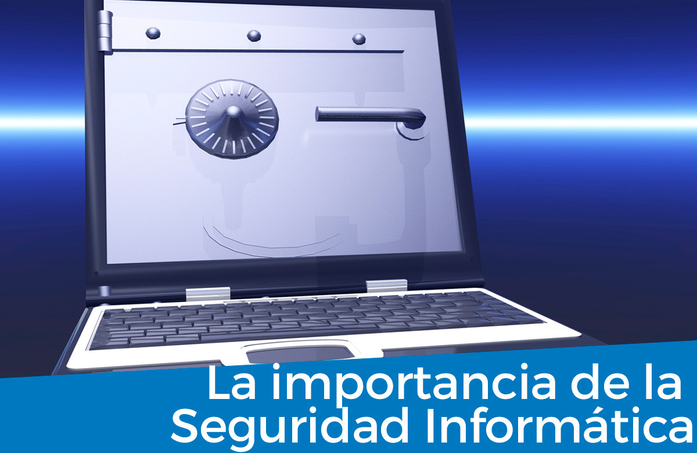

La Importancia De La Seguridad Informática
Hoy en día la seguridad informática se ha convertido en una de las principales preocupaciones de las empresas. Por otro lado el uso de las tecnologías de la información y comunicaciones , es cada vez más extenso por lo que los activos a proteger y las vulnerabilidades aumentan; y por otro lado los ciberataques son más frecuentes y complejos, llegando a tener consecuencias muy graves como como la revelación de información entre otras, por lo que disponer de profesionales en seguridad TIC que puedan proteger los activos en la red se hace imprescindible en todas la empresas por pequeñas o grandes que estas sean. Para lograr sus objetivos la seguridad informática se fundamenta en tres principios, que debe cumplir todo sistema informático: Confidencialidad: Se refiere a la privacidad de la información almacenada y procesada en un sistema informático, las herramientas de seguridad informática deben proteger el sistema de intrusos y accesos por parte de personas o programas no autorizados. Este principio es importante en aquellos sistemas en los que los usuarios, computadoras y datos residen en lugares diferentes, pero están física y lógicamente interconectados. Este principio es importante en aquellos sistemas en los que diferentes usuarios, computadoras y procesos comparten la misma información. Disponibilidad: Se refiere a la continuidad de acceso a los elementos de información almacenados y procesados en un sistema informático.
